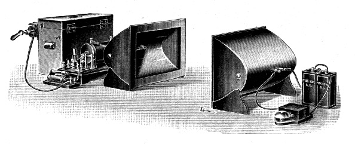

IB DP Physics · Theme C · Wave behaviour
Wave model.
C.2 · Travelling waves, the wave equation, and the nature of sound and of light
Standard level and higher level
The journey
Three parts.
Part 01
Travelling waves
Transverse and longitudinal waves, and \(v = f \lambda\)
Part 02
Two graphs of one wave
Displacement against position, and against time
Part 03
Sound and light
Mechanical waves and electromagnetic waves
Part 01
Travelling waves.
Energy on the move, with nothing carried along
Energy without matter
What a travelling wave is.
- Each particle oscillates about its own place
- It passes its motion to the next, a little later
- The pattern travels. The medium does not
Two ways to oscillate
Transverse and longitudinal.
- Transverse: oscillations at right angles to the direction of travel
- Longitudinal: oscillations along the direction of travel
- Crowded together: a compression. Spread out: a rarefaction
Measuring a wave
Wavelength, frequency and period.
- Wavelength \(\lambda\): the distance between neighbouring points that are in step
- Period \(T\): the time for one oscillation of a particle
- Frequency \(f\): oscillations per second
- Amplitude: the greatest displacement
Speed, frequency and wavelength
The wave equation.
- In one period the wave moves forward one wavelength
- Speed = distance ÷ time = \(\dfrac{\lambda}{T}\)
- True for every kind of wave
Quick check
Travelling waves.
01What does a travelling wave transfer?
02How do the particles move in a longitudinal wave?
03Is sound in air transverse or longitudinal?
04A wave has \(f\) = 50 Hz and \(\lambda\) = 0.30 m. Speed?
05A wave of period 0.20 s travels at 4.0 m s⁻¹. Wavelength?
06What decides the frequency of a wave?
Part 02
Two graphs of one wave.
They look the same and mean different things
A photograph of the wave
Displacement against position.
- All the particles, at one instant
- Peak to peak: the wavelength
- Height of a peak: the amplitude
- It cannot tell you the period
A film of one particle
Displacement against time.
- One particle, followed through time
- Peak to peak: the period
- Height of a peak: the amplitude
- It cannot tell you the wavelength
From a snapshot
The direction each particle is moving.
- Draw the wave a moment later, shifted in its direction of travel
- Each particle moves straight up or down to the new curve
- At a crest or trough: momentarily at rest
- At zero displacement: moving fastest
The same graph for sound
Graphs of a longitudinal wave.
- Displacement is along the wave: say, right is positive
- Compression: particles on both sides have moved towards it
- Rarefaction: they have moved away
Quick check
Two graphs of one wave.
01Which graph gives the wavelength?
02Which graph gives the period?
03A snapshot repeats every 2.0 m; a particle repeats every 0.40 s. Wave speed?
04How fast is a particle moving when it is at a crest?
05What is the displacement at the centre of a compression?
06Two particles are half a wavelength apart. How do their motions compare?
Part 03
Sound and light.
One model, two very different kinds of wave
A mechanical wave
Sound waves.
- Longitudinal: compressions and rarefactions of the medium
- Needs a medium: no sound in a vacuum
- Higher frequency: higher pitch
- Larger amplitude: louder
- Fastest in solids, slowest in gases
| Medium (approximate values) | speed of sound / m s⁻¹ |
|---|---|
| Air at 20 °C | 340 |
| Helium at 20 °C | 1000 |
| Water | 1500 |
| Steel | 5900 |
A wave of fields
Electromagnetic waves.
- Oscillating electric and magnetic fields
- At right angles to each other and to the direction of travel: transverse
- Need no medium
- All travel at \(c = 3.00 \times 10^{8} \,\mathrm{m} \,\mathrm{s}^{-1}\) in a vacuum
The story · Karlsruhe, 1886
Background story · not assessed
Hertz makes Maxwell’s waves.

- In 1864 James Clerk Maxwell’s theory had predicted electromagnetic waves. Nobody had made one
- From 1886 to 1889 Hertz made them with a spark and detected them with a loop of wire. They reflected, refracted and travelled at the speed of light
- Asked what use they were: “Nothing, I guess.” He died at 36; the unit of frequency took his name in 1930
Portrait: Robert Krewaldt, about 1890, public domain. Engraving: unknown author, before 1912, public domain.
One kind of wave, many names
The electromagnetic spectrum.
Compare
Mechanical and electromagnetic waves.
| Mechanical waves | Electromagnetic waves | |
|---|---|---|
| What oscillates | Particles of a medium | Electric and magnetic fields |
| Medium | Essential | Not needed: can cross a vacuum |
| Type | Transverse or longitudinal | Always transverse |
| Speed | Set by the medium: 340 m s⁻¹ for sound in air | \(3.00 \times 10^{8}\) m s⁻¹ in a vacuum; slower in matter |
| Examples | Sound, waves on strings and water, seismic waves | Radio, microwaves, infrared, light, ultraviolet, X-rays, gamma rays |
Quick check
Sound and light.
01Why can sound not cross a vacuum?
02What oscillates in an electromagnetic wave?
03Which has the longer wavelength: infrared or ultraviolet?
04Frequency of a radio wave of wavelength 3.0 m?
05An echo from a cliff returns after 1.0 s. Distance to the cliff? (340 m s⁻¹)
06Are electromagnetic waves transverse or longitudinal?
Summary
The wave model on one slide.
A travelling wave
Energy, not matter
Each particle oscillates about its own place
Two types
Transverse · longitudinal
Across, or along, the direction of travel
Wave equation
\(v = f \lambda = \frac{\lambda}{T}\)
One wavelength in one period
Two graphs
Position: \(\lambda\) · time: \(T\)
A snapshot of all particles, or the history of one
Sound
Longitudinal, needs a medium
Compressions and rarefactions
Electromagnetic waves
Transverse, no medium
Fields oscillate; speed \(c\) in a vacuum
Summary